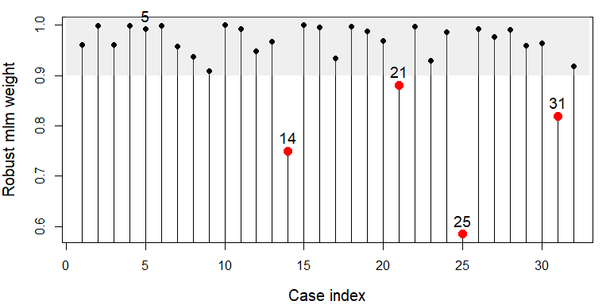

Influence Measures and Diagnostic Plots for Multivariate Linear Models
Version 0.9.1
Functions in this package compute regression deletion diagnostics for multivariate linear models following methods proposed by Barrett & Ling (1992) and provide some associated diagnostic plots. The diagnostic measures include hat-values (leverages), generalized Cook’s distance, and generalized squared ‘studentized’ residuals. Several types of plots to detect influential observations are provided.
In addition, the functions provide diagnostics for deletion of subsets of observations of size m>1. This case is theoretically interesting because sometimes pairs (m=2) of influential observations can mask each other, sometimes they can have joint influence far exceeding their individual effects, as well as other interesting phenomena described by Lawrence (1995). Associated methods for the case m>1 are still under development in this package.
Documentation
Documentation for the package is now available at https://friendly.github.io/mvinfluence/.
Installation
Get the released CRAN version or the development version, here or R-universe
| CRAN version | install.packages("mvinfluence") |
| R-universe | install.packages("mvinfluence", repos = c('https://friendly.r-universe.dev') |
| Development version | remotes::install_github("friendly/mvinfluence") |
Goals
The design goal for this package is that, as an extension of standard methods for univariate linear models, you should be able to fit a linear model with a multivariate response,
and then get useful diagnostics and plots with:
As is done in comparable univariate functions in the car package, noteworthy points are identified in printed output and graphs.
Examples
The Rohwer data contains data on kindergarten children designed to examine how well performance on a set of paired-associate (PA) learning tasks can predict performance on some measures of aptitude and achievement— SAT (a scholastic aptitude test), PPVT (Peabody Picture Vocabulary Test), and Raven ( Raven Progressive Matrices Test). The PA tasks differ in how the stimulus item was presented: n (named), s (still), ns (named still), na (named action) and ss (sentence still).
Here, we fit a MLM to a subset of the Rohwer data (the Low SES group).
data(Rohwer, package="heplots")
Rohwer2 <- subset(Rohwer, subset=group==2)
rownames(Rohwer2)<- 1:nrow(Rohwer2)
Rohwer.mod <- lm(cbind(SAT, PPVT, Raven) ~ n + s + ns + na + ss, data=Rohwer2)
car::Anova(Rohwer.mod)
#>
#> Type II MANOVA Tests: Pillai test statistic
#> Df test stat approx F num Df den Df Pr(>F)
#> n 1 0.202 2.02 3 24 0.1376
#> s 1 0.310 3.59 3 24 0.0284 *
#> ns 1 0.358 4.46 3 24 0.0126 *
#> na 1 0.465 6.96 3 24 0.0016 **
#> ss 1 0.089 0.78 3 24 0.5173
#> ---
#> Signif. codes: 0 '***' 0.001 '**' 0.01 '*' 0.05 '.' 0.1 ' ' 1Influence plots
The default influence plot (type="stres") shows the squared standardized residual against the Hat value. The areas of the circles representing the observations are proportional to generalized Cook’s distances.
(infl <-influencePlot(Rohwer.mod, id.n=4, type = "stres"))
#> H Q CookD L R
#> 5 0.568 0.3439 0.8467 1.316 0.7964
#> 10 0.452 0.0324 0.0634 0.824 0.0591
#> 14 0.126 0.2997 0.1643 0.145 0.3431
#> 15 0.332 0.0105 0.0152 0.498 0.0158
#> 25 0.157 0.3820 0.2601 0.186 0.4532
#> 27 0.367 0.2128 0.3387 0.580 0.3363
#> 29 0.304 0.2295 0.3026 0.437 0.3299As you can see above, the function returns a data frame of the influence statistics for the identified points. “Noteworthy” points are those that are unusual on either Hat value (H) or the squared studentized residual (Q), so more points will be shown than the id.n value. It is often more useful to sort these in descending order by one of the influence measures.
infl |> dplyr::arrange(desc(H))
#> H Q CookD L R
#> 5 0.568 0.3439 0.8467 1.316 0.7964
#> 10 0.452 0.0324 0.0634 0.824 0.0591
#> 27 0.367 0.2128 0.3387 0.580 0.3363
#> 15 0.332 0.0105 0.0152 0.498 0.0158
#> 29 0.304 0.2295 0.3026 0.437 0.3299
#> 25 0.157 0.3820 0.2601 0.186 0.4532
#> 14 0.126 0.2997 0.1643 0.145 0.3431An alternative (type="LR") plots residual components against leverage components, both on log scales. Because influence is a product of residual Leverage, this plot had the property that contours of constant Cook’s distance fall on diagonal lines with slope = -1. Each successive dashed line represents a multiple of Cook’s D. This plot is often easier to read than the standard version.
influencePlot(Rohwer.mod, id.n=4, type="LR")#> H Q CookD L R
#> 5 0.568 0.3439 0.8467 1.316 0.7964
#> 10 0.452 0.0324 0.0634 0.824 0.0591
#> 14 0.126 0.2997 0.1643 0.145 0.3431
#> 15 0.332 0.0105 0.0152 0.498 0.0158
#> 25 0.157 0.3820 0.2601 0.186 0.4532
#> 27 0.367 0.2128 0.3387 0.580 0.3363
#> 29 0.304 0.2295 0.3026 0.437 0.3299We observe that case 5 has the largest leverage and it is highly influential. Case 25 has the largest residual component and middling leverage, so it is moderately influential. Cases 14, 29, 27 have nearly identical residuals, and their influence increases from left to right with leverage.
Index plots
If you wish to see how the observations fare on each of the the measures (as well as Mahalanobis of the residuals from the origin), the inflIndexPlot() function gives you index plots.
There are extensive options for identifying and labeling “noteworthy” observations, with various methods. These rely on car::showLabels(), where the default id.method = "y" label points whose Y coordinate is very large.
infIndexPlot(Rohwer.mod,
id.n=3, id.col = "red", id.cex=1.5, id.location="ab")
In this example, note that while case 5 stands out as influential, it does not have an exceptionally large Mahalanobis squared distance, of the residuals.
Robust MLMs
Influential cases and those with large residuals can sometimes be dealt with by fitting a robust version of the multivariate model. The function heplots::robmlm() uses a simple M-estimator that down-weights cases with large residuals. Fitting is done by iterated re-weighted least squares (IWLS), using weights based on the Mahalanobis squared distances of the current residuals from the origin, and a scaling (covariance) matrix calculated by MASS::cov.trob().
The returned object has a weights component, the weight for each case in the final iteration. Which ones are less than 0.9 here?
which(Rohwer.rmod$weights < .9)
#> [1] 14 21 25 31A simple index plot makes the down-weighted observations stand out. Case 5 is not among them, but I label it anyway.
par(mar = c(4,4,1,1)+.1)
wts <- Rohwer.rmod$weights
idx <- c(5, which(wts < .9))
plot(wts, type="h",
xlab = "Case index",
ylab = "Robust mlm weight",
cex.lab = 1.25)
rect(0, .9, 33, 1.1,
col=scales::alpha("gray", .25),
border=NA)
points(wts, pch = 16,
cex = ifelse(wts < .9, 1.5, 1),
col = ifelse(wts < .9, "red", "black"))
text(idx, wts[idx], label=idx, pos=3, cex=1.2, xpd=NA )
What’s up with case 5? It had the largest leverage, but it’s Mahalanobis was not large. Thus, it was not down-weighted, even though it is an influential observation.
What difference do these observations make in the fitted regression? This calculates the percentage relative difference between the coefficients in the standard lm() and the robust version. The largest changes are for the coefficients of the ss task, but there is an even greater one for PPVT on the n task.
100 * abs(coef(Rohwer.mod) - coef(Rohwer.rmod)) / abs(coef(Rohwer.mod))
#> SAT PPVT Raven
#> (Intercept) 1.001 1.27 0.755
#> n 4.001 36.32 3.874
#> s 1.195 13.01 0.401
#> ns 0.152 15.68 14.771
#> na 1.560 2.26 6.913
#> ss 15.173 26.55 21.288Citation
To cite mvinfluence in publications, use:
citation("mvinfluence")
#> To cite package 'mvinfluence' in publications use:
#>
#> Friendly M (2022). _mvinfluence: Influence Measures and Diagnostic
#> Plots for Multivariate Linear Models_. R package version 0.9.0,
#> <https://CRAN.R-project.org/package=mvinfluence>.
#>
#> A BibTeX entry for LaTeX users is
#>
#> @Manual{,
#> title = {mvinfluence: Influence Measures and Diagnostic Plots for Multivariate Linear
#> Models},
#> author = {Michael Friendly},
#> year = {2022},
#> note = {R package version 0.9.0},
#> url = {https://CRAN.R-project.org/package=mvinfluence},
#> }References
Barrett, B. E. and Ling, R. F. (1992). General Classes of Influence Measures for Multivariate Regression. Journal of the American Statistical Association, 87(417), 184-191.
Barrett, B. E. (2003). Understanding Influence in Multivariate Regression. Communications in Statistics – Theory and Methods, 32, 3, 667-680.
Lawrence, A. J. (1995). Deletion Influence and Masking in Regression. Journal of the Royal Statistical Society. Series B (Methodological) , 57, No. 1, pp. 181-189.